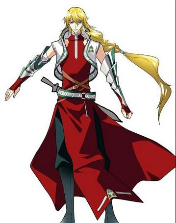
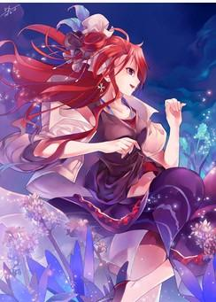
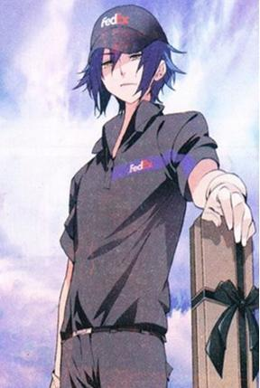
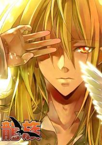

|  | 恺撒·加图索（Caesar·Gattuso），是中国作家江南所著小说《龙族》中的角色。意大利著名屠龙家族——加图索家族的继承人，从小就被作为领袖培养，被认为是会带领加图索家走向辉煌的男人。性格不羁，难以管束，和父亲庞贝·加图索（种马老爹）关系很差。是卡塞尔学院学生会主席，学院有名的高富帅，视楚子航为唯一的对手。参与过三峡、北京、东京的屠龙任务。在三峡利用鱼雷重创青铜与火之王诺顿，在北京任务中在一栋大厦内使用爆血同帕西一起阻挡从尼伯龙根中逃出的鬼车鸟，在日本任务中与楚子航和昂热一起阻挡尸守群，是陈墨瞳的准未婚夫（在日本东京一位名叫麻生真的女孩救过凯撒）。 |
|  | 陈墨瞳（诺诺）是《龙族》女主角，绰号：红发诺诺、红发巫女。一头暗红色的长发十分惹眼，双瞳亮如点漆，眉宇飞扬，容光照人。性格火爆飞扬的另类美女，讲义气重感情，性格中带一丝男生的豪情，而且身手颇为敏捷，武功造诣也不弱，侧写能力极强，但完全是无师自通，在水下青铜城屠龙以及火车南站事件中发挥过重要作用。 |
|  | 楚子航，江南所著小说《龙族》中的主要人物之一，卡塞尔学院狮心会前任会长（在奥丁修改过的世界里现任会长为巴布鲁，而楚子航的地位被阿卜杜拉·阿巴斯替代），学院的王牌专员，高天原牛郎三人组成员之一（另两位是恺撒·加图索和路明非），掌握“爆血”技能，拥有永不熄灭的黄金瞳。 其亲生父亲为龙族混血种，血统为S级的楚天骄，母亲则为普通人类苏小妍，继父为企业巨头鹿天铭。 在卡塞尔学院中十分受女生欢迎。作为狮心会前任会长，与学生会前任主席恺撒·加图索实力不分高下。 因其本人面瘫、作息时间精细等原因，也常被路明非调侃为“机器人”。 现已失踪，进入尼伯龙根后被奥丁篡改为15岁时死亡。除路明非外，没有人记得他的存在。在卡塞尔学院被一位阿拉伯人阿卜杜拉·阿巴斯代替，在仕兰的光环被路明非取代。 现已被其生母苏小妍记起。 |
|  | 芬格尔是江南编写的小说龙族里面的一个角色，角色在故事中任卡塞尔学院新闻部部长所属于卡塞尔学院学生会。留级四年，现在八年级。十年前“格陵兰阴影”幸存者。黑客高手，尽职的狗仔，路明非的难兄难弟，现在的血统与他表现出神一般的吐槽功力、无与伦比的八卦精神、以及身为狗仔领袖的废柴模样只不过是他在掩藏。 |